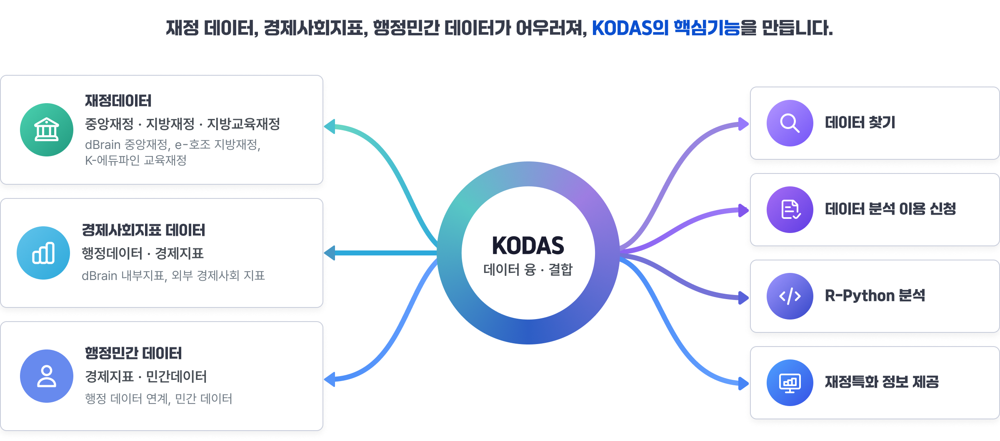
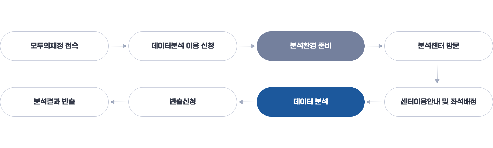

데이터분석서비스(KODAS) 이용
KODAS에서 재정데이터를 분석해보세요.
재정데이터, 사회·경제 데이터, 행정데이터와 민간 데이터를 융·결합해 분석하고, 그 결과를 정책과정에 활용하는 데이터분석 플랫폼입니다.
분석에 필요한 데이터와 분석도구, 쾌적한 분석 환경을 이용하고 데이터 분석 교육과정에도 참여할 수 있습니다.
제공 서비스
재정 데이터, 경제사회지표, 행정민간 데이터가 KODAS 데이터 융·결합을 통해 데이터 찾기, 데이터 분석 이용 신청, R-Python 분석, 재정특화 정보 제공 기능으로 연결됩니다.

FIS재정분석교육센터 이용절차
모두의재정 접속, 데이터분석 이용 신청, 분석환경 준비, 분석센터 방문, 센터이용안내 및 좌석배정, 데이터 분석, 반출신청, 분석결과 반출 순서로 진행됩니다.
